들어가며
홈페이지는 본당 사목과 운영을 돕는 보조 수단입니다.
본당의 일들이 일어나는 곳은 성전과 공동체 안이고, 홈페이지는 그것을 알리고 기록하고 다시 찾을 수 있게 거드는 자리에 있습니다.
오늘 이 자료에서는 현재 홈페이지가 실제로 하고 있는 일을 정리해 말씀드립니다.
현재 운영 중인 여섯 가지 기능
여섯 가지 기능 한눈에
01
오늘의 말씀 + 묵상
매일의 복음을 첫 화면에서
02
성전건축 일지
단계별 기록과 사진
03
내 관심 단체·모임
선택한 활동의 소식
04
주보 AI 추출
공지·행사·모임 자동 정리
05
본당 역사 저장소
한자리에 누적되는 기록
06
보안성
암호화·백업·인증된 관리
추가로 카카오 채널 연동을 준비하고 있습니다.
① 오늘의 말씀 + 묵상
- 매일의 복음 말씀을 홈페이지 첫 화면에서 바로 만날 수 있습니다.
- 묵상 글이 일정 주기로 자동으로 바뀌며, 따로 찾지 않아도 자연스레 눈에 들어옵니다.
- 본당에 방문하지 못한 날에도 말씀 한 구절을 만나도록 돕는 자리입니다.
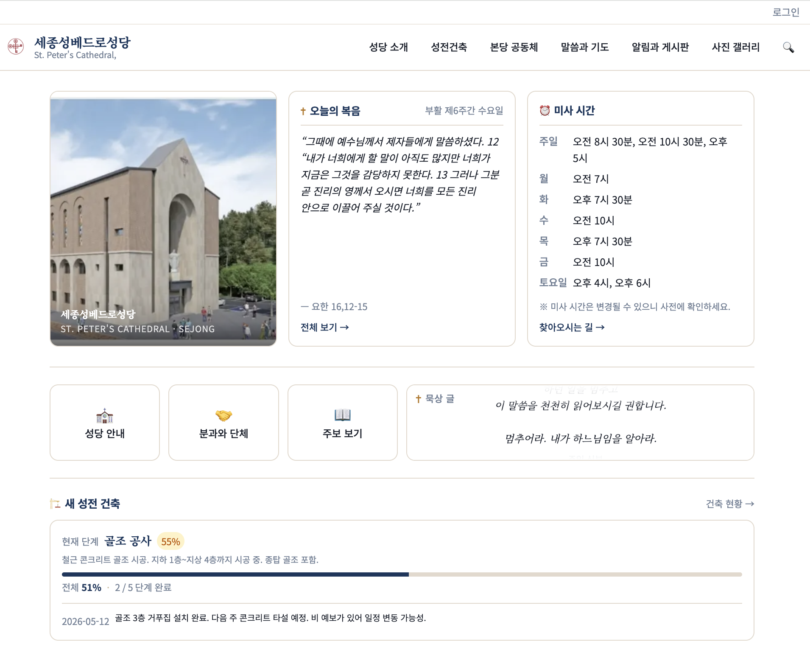
② 성전건축 일지
- 성전건축의 진행 과정을 단계별 기록과 사진으로 남깁니다.
- 일지를 한 줄씩 누적해 시간이 지나도 그 흐름을 다시 따라갈 수 있습니다.
- 본당 전체가 함께한 시간을 자료로 보관하는 자리입니다.
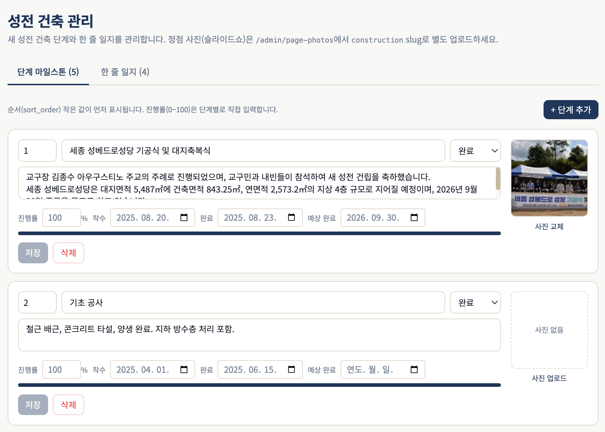
③ 내 관심 단체·모임
- 회원이 홈페이지에서 관심 있는 단체와 모임을 직접 선택할 수 있습니다.
- 선택한 단체·모임의 공지와 일정이 본인에게 닿도록 연결됩니다.
- 알림은 카카오 채널 연동을 통해 받게 됩니다.
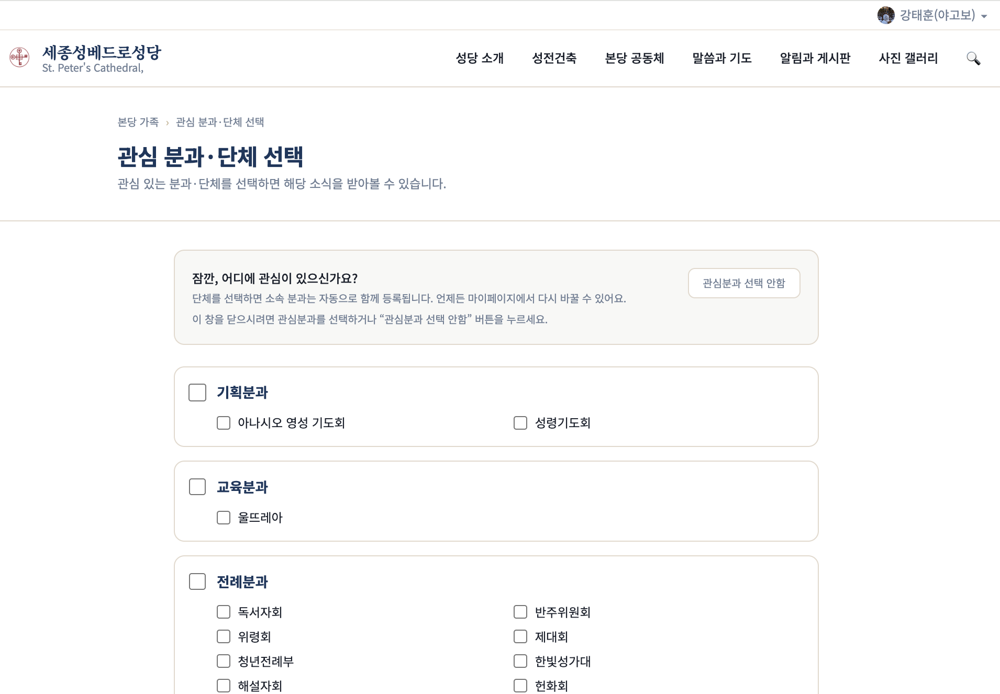
④ 주보 AI 추출
- 매주 발행되는 주보 PDF를 업로드하면, 본문 내용을 AI가 자동으로 살펴봅니다.
- 공지·행사·모임 항목이 자동으로 분류되어 홈페이지의 해당 자리로 이동합니다.
- 분류된 결과는 관리자가 다시 확인한 뒤 공개합니다.
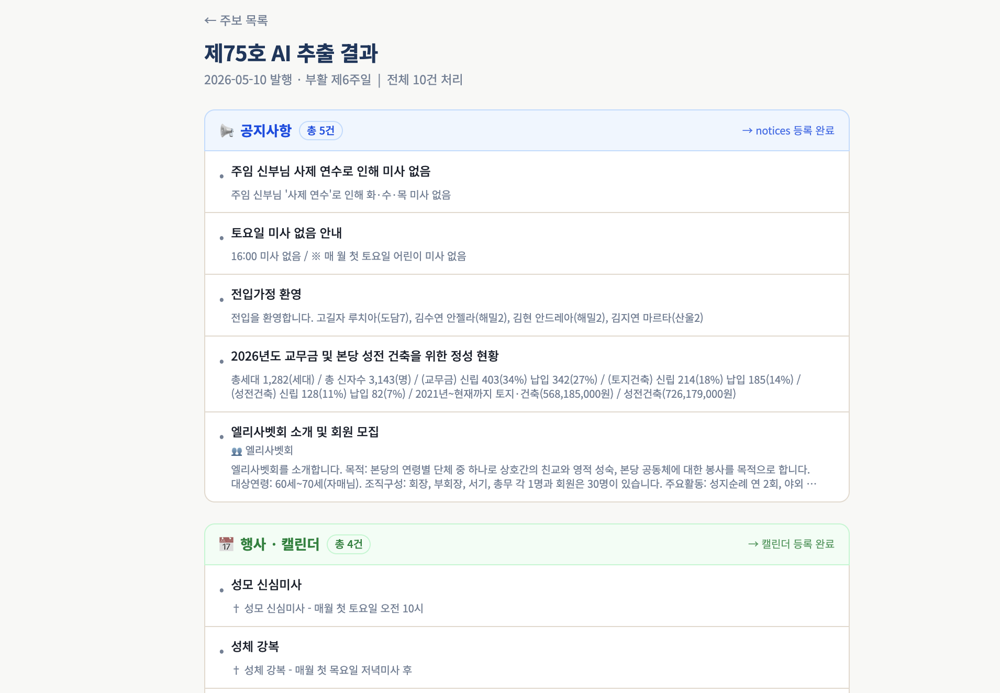
⑤ 본당 역사 저장소 역할
- 주보·공지·행사·사진이 홈페이지 안에 연도별로 누적됩니다.
- 시간이 지난 뒤에도 그 시기의 본당 활동을 다시 찾아볼 수 있습니다.
- 흩어지기 쉬운 기록을 한자리에 보관하는 자리입니다.
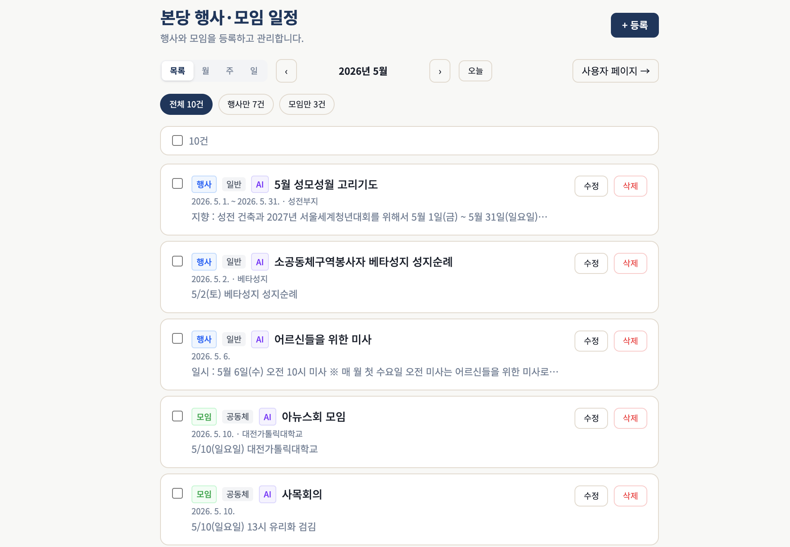
⑥ 보안성
- 회원 정보는 안전하게 암호화되어 저장됩니다.
- 관리자 페이지는 인증된 사용자만 접근할 수 있습니다.
- 본당 기록은 정기적으로 백업되어 보존됩니다.
홈페이지에 남겨지는 정보가 안심하고 맡겨질 수 있는 환경을 유지합니다.
카카오 채널 연동
- 본당 카카오 채널을 통해 알림을 받을 수 있도록 준비하고 있습니다.
- 회원이 관심 단체·모임을 선택해 두면, 해당 공지와 일정이 채널로 안내됩니다.
- 카카오 채널 개설 절차가 마무리되는 대로 적용됩니다.
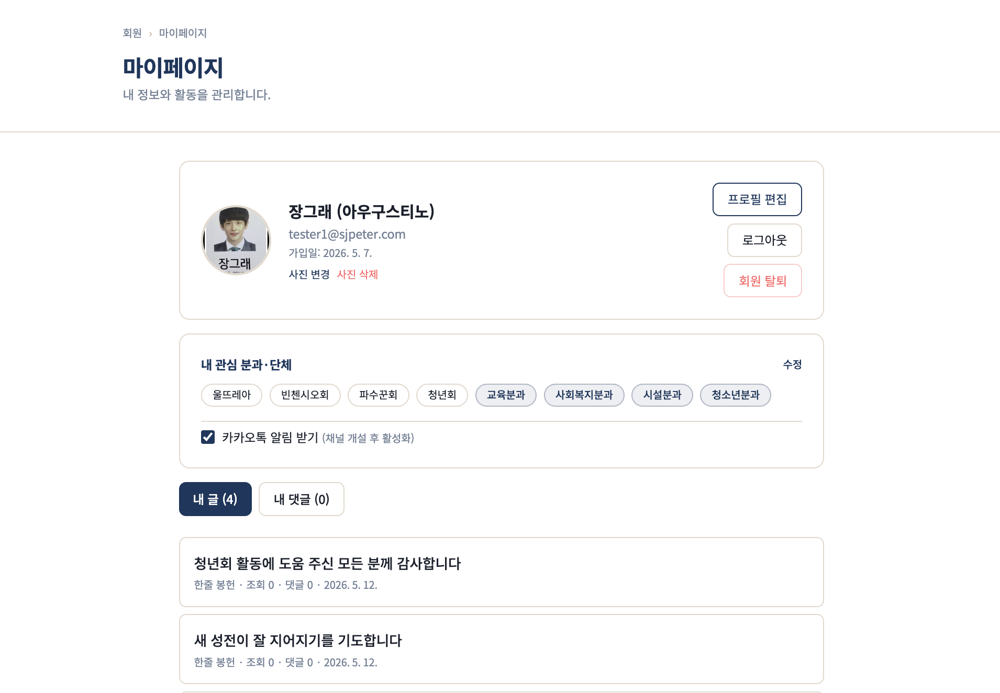
두 가지 실제 흐름
홈페이지가 실제로 어떻게 동작하는지 단계별로 살펴봅니다
흐름 1. 알림 수신
회원이 홈페이지에 가입한 순간부터 카카오 알림을 받기까지의 네 단계입니다.
① 회원가입
② 첫 로그인
③ 관심 단체·모임 선택
④ 카카오 알림 수신
STEP 1회원가입
① 회원가입
② 첫 로그인
③ 관심 단체·모임 선택
④ 카카오 알림 수신
- 홈페이지에서 회원가입을 진행합니다.
- 이메일 인증을 거쳐 본인 확인을 마칩니다.
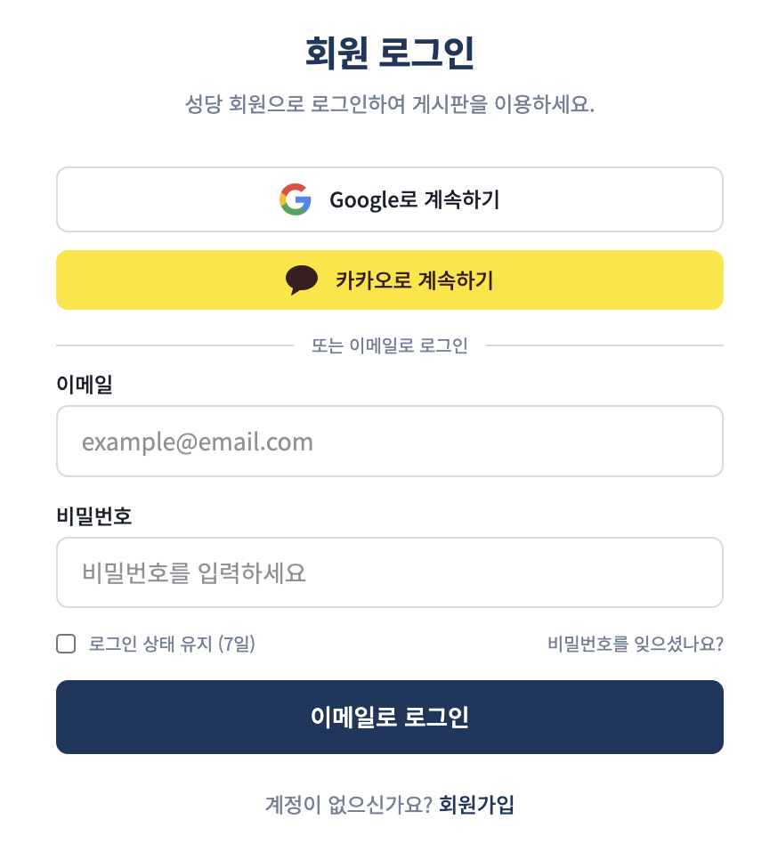
STEP 2첫 로그인
① 회원가입
② 첫 로그인
③ 관심 단체·모임 선택
④ 카카오 알림 수신
- 인증을 마친 계정으로 첫 로그인을 합니다.
- 로그인과 함께 관심 단체·모임을 선택할 수 있는 안내가 나타납니다.
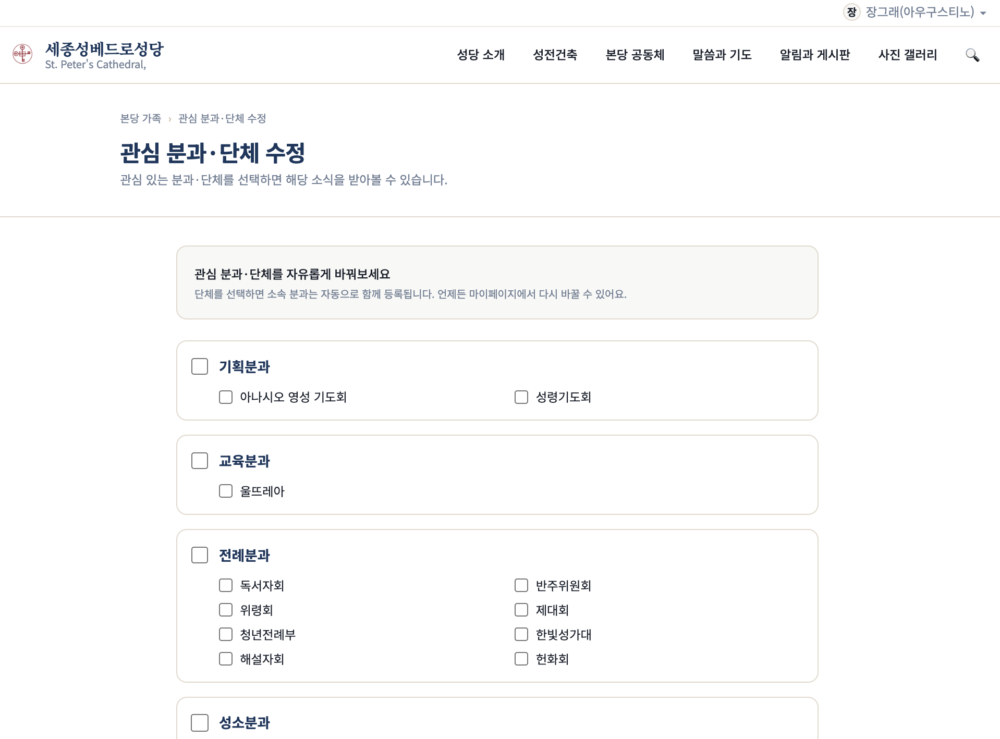
STEP 3관심 단체·모임 선택
① 회원가입
② 첫 로그인
③ 관심 단체·모임 선택
④ 카카오 알림 수신
- 본당의 단체와 모임 목록에서 관심 있는 것을 선택합니다.
- 선택한 단체가 속한 분과는 자동으로 함께 포함됩니다.
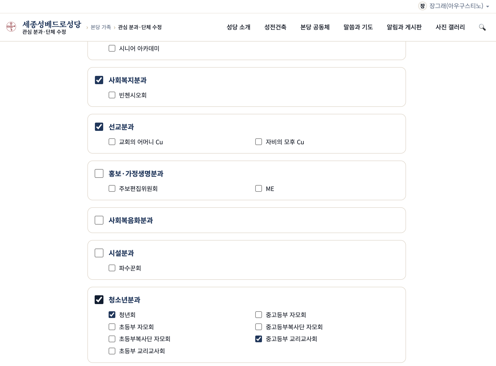
STEP 4카카오 알림 수신
① 회원가입
② 첫 로그인
③ 관심 단체·모임 선택
④ 카카오 알림 수신
- 선택한 단체·모임의 공지와 일정이 등록되면, 본당 카카오 채널을 통해 알림이 전달됩니다.
- 글로벌 알림 토글로 받기/받지 않기를 직접 조절할 수 있습니다.
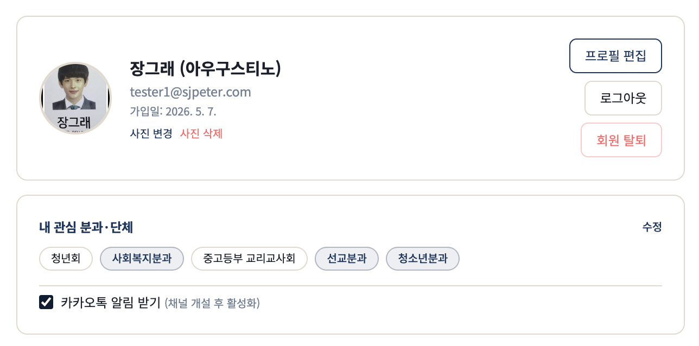
흐름 2. 주보 AI 추출
업로드한 주보 한 부가 홈페이지의 여러 자리로 정리되어 들어가는 네 단계입니다.
① 주보 PDF 입력
② AI 분석
③ 자동 분류·이동
④ 관리자 검수·공개
STEP 1주보 PDF 입력
① 주보 PDF 입력
② AI 분석
③ 자동 분류·이동
④ 관리자 검수·공개
- 매주 발행되는 주보 PDF를 관리자 페이지에 업로드합니다.
- PDF 원본은 그대로 보관되어 언제든 다시 열어볼 수 있습니다.
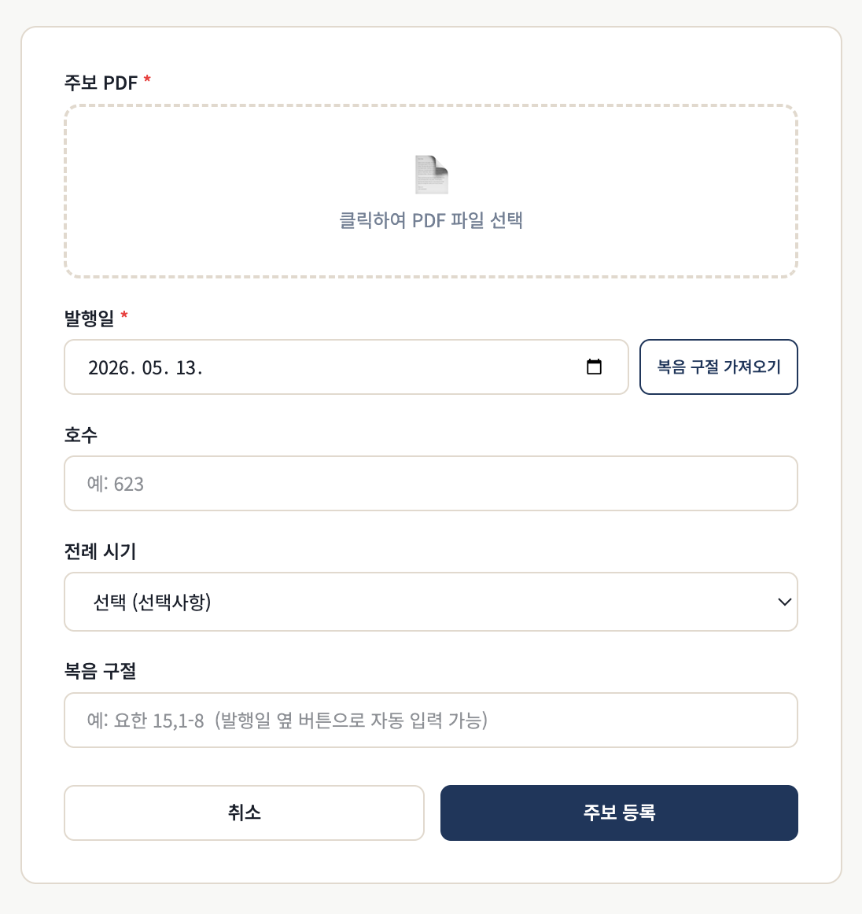
STEP 2AI 분석
① 주보 PDF 입력
② AI 분석
③ 자동 분류·이동
④ 관리자 검수·공개
- 업로드된 주보를 AI가 한 장씩 읽어 본문과 표 내용을 정리합니다.
- 텍스트와 이미지 정보 모두 분석 대상이 됩니다.
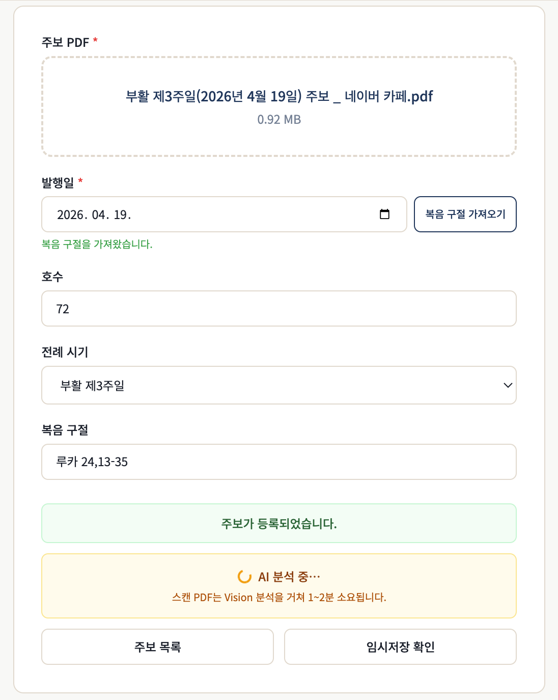
STEP 3자동 분류·이동
① 주보 PDF 입력
② AI 분석
③ 자동 분류·이동
④ 관리자 검수·공개
- 분석 결과는 공지 / 행사 / 모임 세 갈래로 자동 분류됩니다.
- 각 항목은 홈페이지 안의 알맞은 자리로 이동합니다.
- 날짜 정보가 부족한 항목은 별도 임시 보관함으로 분리됩니다.
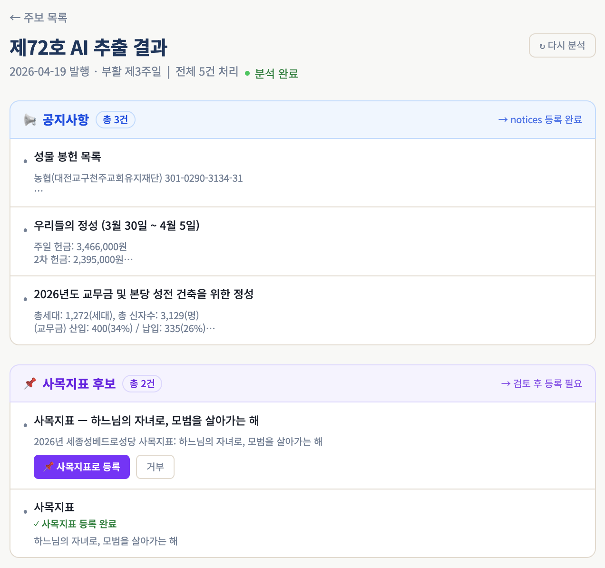
STEP 4관리자 검수·공개
① 주보 PDF 입력
② AI 분석
③ 자동 분류·이동
④ 관리자 검수·공개
- 자동 등록된 항목들은 관리자 화면에서 한 번 더 확인합니다.
- 내용이 맞으면 그대로 공개하고, 수정이 필요하면 손을 본 뒤 공개합니다.
- AI가 만든 항목임을 표시하는 별도 표지가 함께 붙습니다.

본당의 시간을 보관하는 자리
홈페이지는 본당 사목과 운영을 거드는 한 자리입니다
한 자리에 모이는 기록
- 매주의 주보, 그 안의 공지·행사·모임
- 매일의 말씀과 묵상
- 성전건축의 단계별 일지
- 단체·모임의 공지와 사진
이 모든 것이 홈페이지 안에서 연도별로 정돈되어 보관됩니다.
정리
| 구분 | 내용 |
|---|---|
| 매일 | 오늘의 말씀 + 묵상 |
| 매주 | 주보 AI 추출 → 공지·행사·모임 자동 정리 |
| 회원 | 관심 단체·모임 선택 → 카카오 채널 알림 |
| 기록 | 성전건축 일지 · 본당 역사 저장소 |
| 운영 | 회원 정보 암호화 · 정기 백업 · 인증된 관리 |